공중유적
지상에서 할 일을 모두 마쳤으면 공중유적으로 갑시다. 먼저 네 개의 포대에 접근하여 싸웁니다. 로켓포와 화염포가 있는데, 로켓포에게는 미사일을, 화염포에게는 화염방사를 배울 수 있습니다. 모두 기계답게 전기속성에 약합니다. 전투 사이에는 잠깐 지상에 내려갈 수도 있으니 혹시나 휴식이 필요하다면 참고하시고요.
네 대를 모두 물리치면 보스인 주포, 솔캐논이 나옵니다. 이제까지와는 달리 제법 장기전이 될 것입니다. 제1세계에서 HP가 가장 높은 녀석입니다. 먼저 레벨5데스로 런처 둘을 제거한 후, 각종 전기속성 공격이란 공격은 잔뜩 퍼부으세요. 인정사정 보지 말고.. 이 녀석은 여러 턴에 걸쳐서 파동포를 준비합니다. 맞으면 큰 데미지에 슬립까지 걸리니 골치아픕니다. 그 전에 격파하시길..
전투가 끝난 후 안으로 들어와서 아이템 먹으며 나아갑시다. 여기서 의외로 상자 놓칠 가능성이 많고 도둑의 숨은길 찾기 능력이 반드시 필요한 부분이 있으니 길을 잘 찾아 나아가세요. 꽤나 괜찮은 아이템들이 많습니다. 선풍마인에게 에어로라 및 화이트윈드를, 라미아에게 침천개를 배울 수 있습니다. 특히 화이트윈드는 중후반에 제법 괜찮은 회복마법입니다. 되도록 익혀두시길..
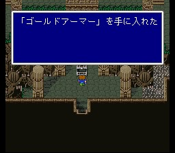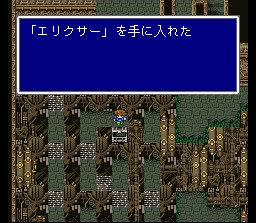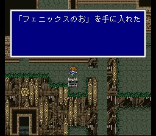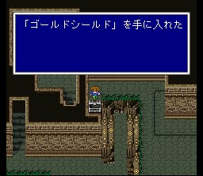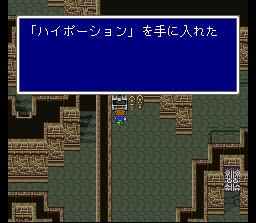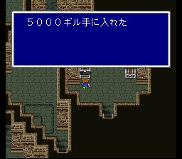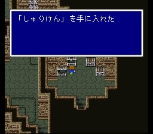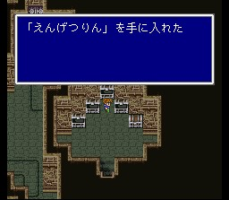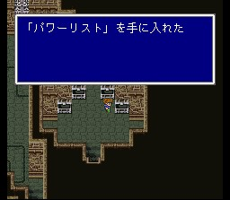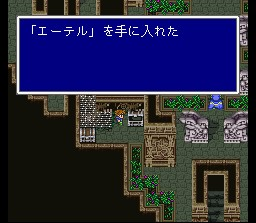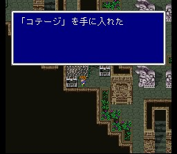 마지막 층에 가면 타이쿤왕이 보이기 시작합니다.
타이쿤 왕이
있는 마지막 장소에 들어가기 직전, 하이드라라는 강적이 가끔 출현합니다. 이 녀석은
온갖 속성을 다 흡수하는 다소 까다로운 녀석이며, 죽을 때 레벨4그라비가를
씁니다. 나중에도 기회는 있긴 하지만, 레벨이 4의 배수인 상태에서 녀석을 쓰러뜨리기만
하면 되니까 배워두는게 좋겠습니다.
타이쿤왕이 있는 곳에 도달하면 타이쿤왕이 알케오에이비스와 대적하고
있습니다. 곧 보스전에 돌입합니다.
이 녀석은 맞을 때마다 속성이 바뀌니,
속성 공격보다는 침천개로 계속 두들기는게 속편합니다. 7번 두들기면 죽었다가 부활하는데,
이 때는 레벨5데스로 끝내면 됩니다.
전투 후 크리스탈룸에서 가라프의 손녀인 쿠루루가 도착하고, 가라프는 기억을 되찾습니다. 타이쿤왕은 파리스를 알아보고 부녀가 상봉하는데, 엑스데스가 부활하여 다음은 가라프의 세계라며 떠납니다. 이윽고 일행은 모두 위험에 처하게 되는데, 타이쿤왕이 목숨을 바쳐 크리스탈의 폭주를 막고.. 일행은 유적을 탈출합니다.
부서진 크리스탈에서 직업 사무라이, 용기사, 무용수, 약사를 얻습니다. 이제 남은 것은 흉내내기 뿐입니다.
가라프는 모든 일을 기억해 내어 엑스데스에 대해 이야기하고, 가라프와 쿠루루는 자기 세계의 위험을 막기 위해 떠납니다. 일행도 따라가려 하나 다시 돌아오지 못한다는 가라프의 만류로 일단 남습니다.
가라프를 떠나보낸 일행은 상의 끝에 역시 가라프의 세계로 가기로 결정합니다. (삽질..) 이제 그 수단을 부탁하기 위해 타이쿤의 운석으로 시드를 만나러 갑시다.
타이쿤 운석
월스
운석
칼낙 운석
멸망한
마을 운석
타이쿤성
릭스
고대도서관
월스성
월스마을
이스토리
칼낙
자콜
툴
해적의
동굴
바람의 신전
배들의
묘지
북의 산
카웬
크레센트
유사의
사막
비공정
기지